CS180 Fall 2025 Project 3 Write-Up
Link to webpage: https://thelemperor.github.io/180/proj3/index.html
Overview of Project
The goal of this project was to shoot pictures, select point correspondences, calculate the homography between them, transform the image and then stitch them together.
A.1: Shoot the Pictures

|
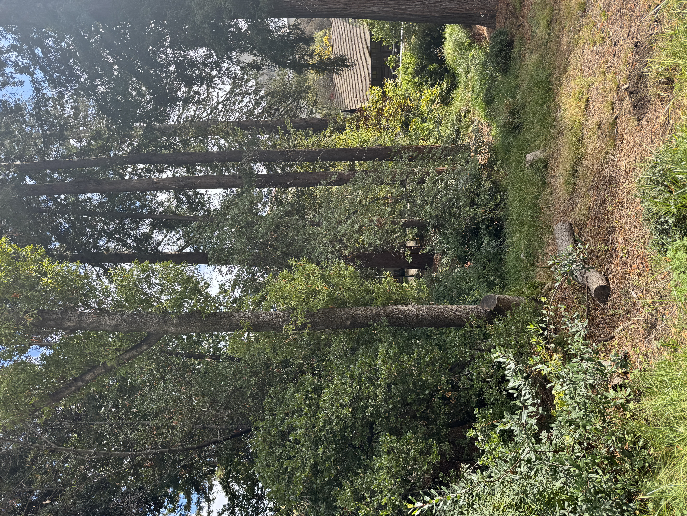 |

|

|
|
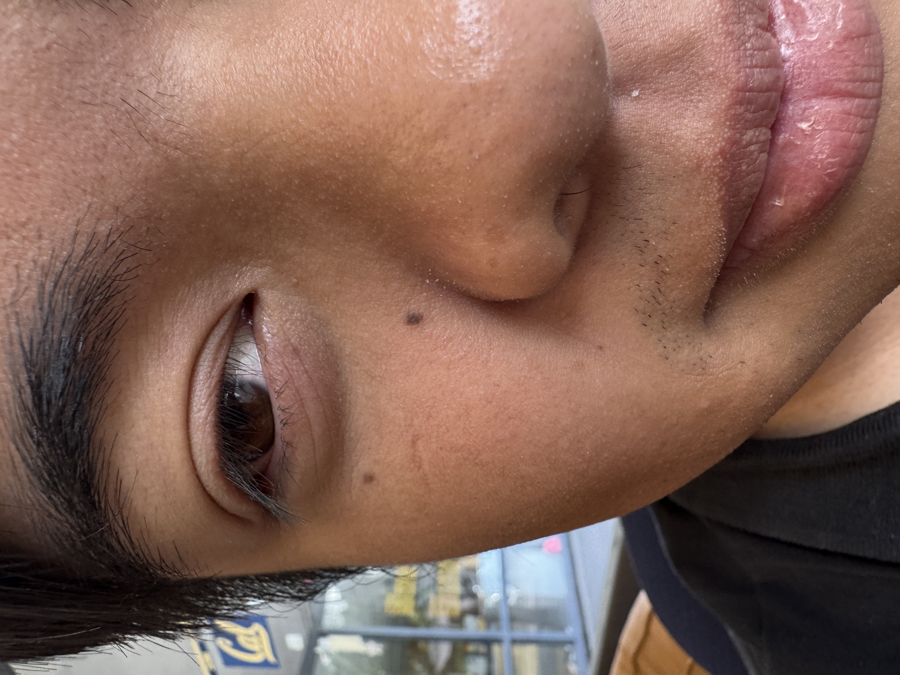 |
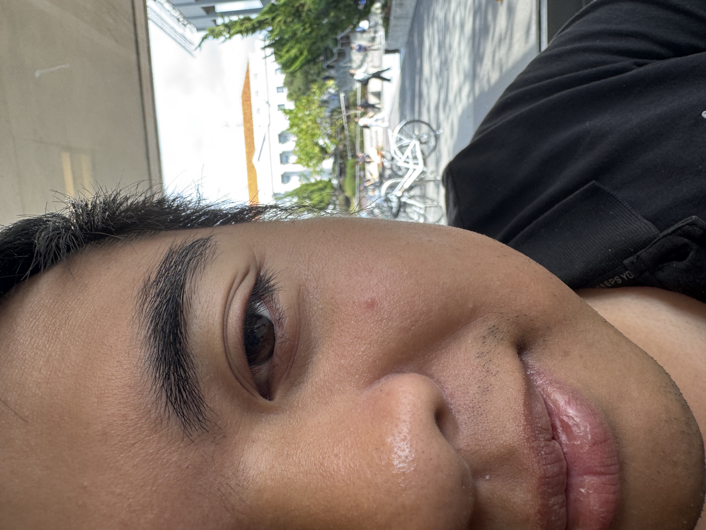 |
A.2: Recover Homographies
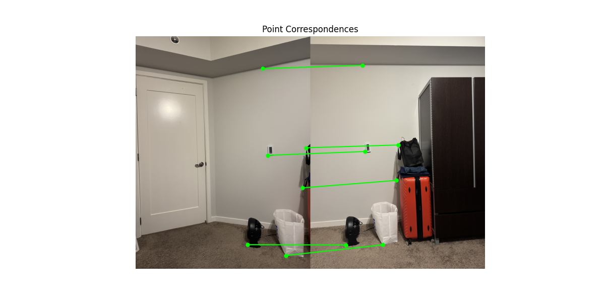
System of Equations (Ah = b)
Shape of A: (12, 8) Matrix A: [[ 161.36, 89.33, 1.0, 0.0, 0.0, 0.0, -63422.31, -35111.40], [ 0.00, 0.00, 0.0, 161.36, 89.33, 1.0, -16116.86, -8922.50], [ 169.99, 356.34, 1.0, 0.0, 0.0, 0.0, -69584.28, -145863.21], [ 0.00, 0.00, 0.0, 169.99, 356.34, 1.0, -62612.17, -131248.21], [ 109.59, 645.88, 1.0, 0.0, 0.0, 0.0, -37873.15, -223203.28], [ 0.00, 0.00, 0.0, 109.59, 645.88, 1.0, -70677.97, -416536.60], [ 224.16, 645.40, 1.0, 0.0, 0.0, 0.0, -104007.24, -299454.65], [ 0.00, 0.00, 0.0, 224.16, 645.40, 1.0, -152086.86, -437884.09], [ 265.39, 445.98, 1.0, 0.0, 0.0, 0.0, -137001.86, -230231.42], [ 0.00, 0.00, 0.0, 265.39, 445.98, 1.0, -124463.44, -209160.61], [ 272.10, 336.21, 1.0, 0.0, 0.0, 0.0, -143596.80, -177429.75], [ 0.00, 0.00, 0.0, 272.10, 336.21, 1.0, -93828.51, -115935.52]] Shape of b: (12, 1) Vector b: [[393.04], [ 99.88], [409.34], [368.32], [345.58], [644.92], [463.99], [678.47], [516.24], [468.99], [527.74], [344.83]]
Recovered Homography Matrix (H)
[[ 0.5248, 0.0060, 252.4725], [-0.3487, 0.8661, 63.9232], [-0.0009, 0.0000, 1.0000]]
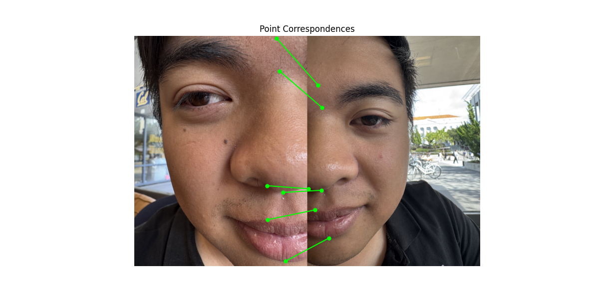
System of Equations (Ah = b)
Shape of A: (12, 8) Matrix A: [[ 33.85, 153.09, 1.0, 0.0, 0.0, 0.0, -15058.00, -68095.47], [ 0.0, 0.0, 0.0, 33.85, 153.09, 1.0, -249.21, -1126.98], [ 46.80, 224.03, 1.0, 0.0, 0.0, 0.0, -21263.77, -101800.93], [ 0.0, 0.0, 0.0, 46.80, 224.03, 1.0, -5144.96, -24631.65], [ 4.13, 477.62, 1.0, 0.0, 0.0, 0.0, -1715.13, -198254.90], [ 0.0, 0.0, 0.0, 4.13, 477.62, 1.0, -1933.89, -223540.67], [ 43.92, 482.41, 1.0, 0.0, 0.0, 0.0, -20441.06, -224526.13], [ 0.0, 0.0, 0.0, 43.92, 482.41, 1.0, -21481.95, -235959.33], [ 24.74, 543.77, 1.0, 0.0, 0.0, 0.0, -10294.99, -226235.44], [ 0.0, 0.0, 0.0, 24.74, 543.77, 1.0, -14214.58, -312369.70], [ 68.37, 631.50, 1.0, 0.0, 0.0, 0.0, -32311.15, -298453.42], [ 0.0, 0.0, 0.0, 68.37, 631.50, 1.0, -48122.03, -444496.23]] Shape of b: (12, 1) Vector b: [[444.81], [ 7.36], [454.40], [109.95], [415.09], [468.03], [465.42], [489.12], [416.05], [574.45], [472.61], [703.88]]
Recovered Homography Matrix (H)
[[ 1.3281, -0.0672, 413.8106], [ 0.4633, 1.3911, -221.1418], [ 0.0007, -0.0001, 1.0000]]
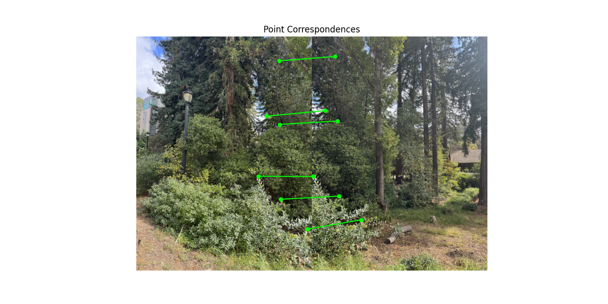
System of Equations (Ah = b)
Shape of A: (12, 8) Matrix A: [[ 71.24, 61.05, 1.0, 0.0, 0.0, 0.0, -31382.33, -26892.53], [ 0.0, 0.0, 0.0, 71.24, 61.05, 1.0, -5305.67, -4546.60], [ 42.00, 227.39, 1.0, 0.0, 0.0, 0.0, -16810.38, -91008.35], [ 0.0, 0.0, 0.0, 42.00, 227.39, 1.0, -10275.63, -55630.41], [ 78.91, 259.51, 1.0, 0.0, 0.0, 0.0, -34798.70, -114436.63], [ 0.0, 0.0, 0.0, 78.91, 259.51, 1.0, -21310.73, -70081.01], [ 3.65, 430.16, 1.0, 0.0, 0.0, 0.0, -1372.58, -161647.13], [ 0.0, 0.0, 0.0, 3.65, 430.16, 1.0, -1567.70, -184626.66], [ 83.23, 490.56, 1.0, 0.0, 0.0, 0.0, -36980.47, -217972.00], [ 0.0, 0.0, 0.0, 83.23, 490.56, 1.0, -41626.01, -245353.93], [ 152.26, 563.43, 1.0, 0.0, 0.0, 0.0, -80059.68, -296262.24], [ 0.0, 0.0, 0.0, 152.26, 563.43, 1.0, -90163.92, -333653.14]] Shape of b: (12, 1) Vector b: [[440.50], [ 74.47], [400.23], [244.65], [440.98], [270.05], [375.78], [429.20], [444.33], [500.15], [525.82], [592.19]]
Recovered Homography Matrix (H)
[[ 0.2763, 0.0194, 370.5793], [-0.5406, 0.9088, 49.4725], [-0.0015, 0.0001, 1.0000]]
A.3: Warp the images
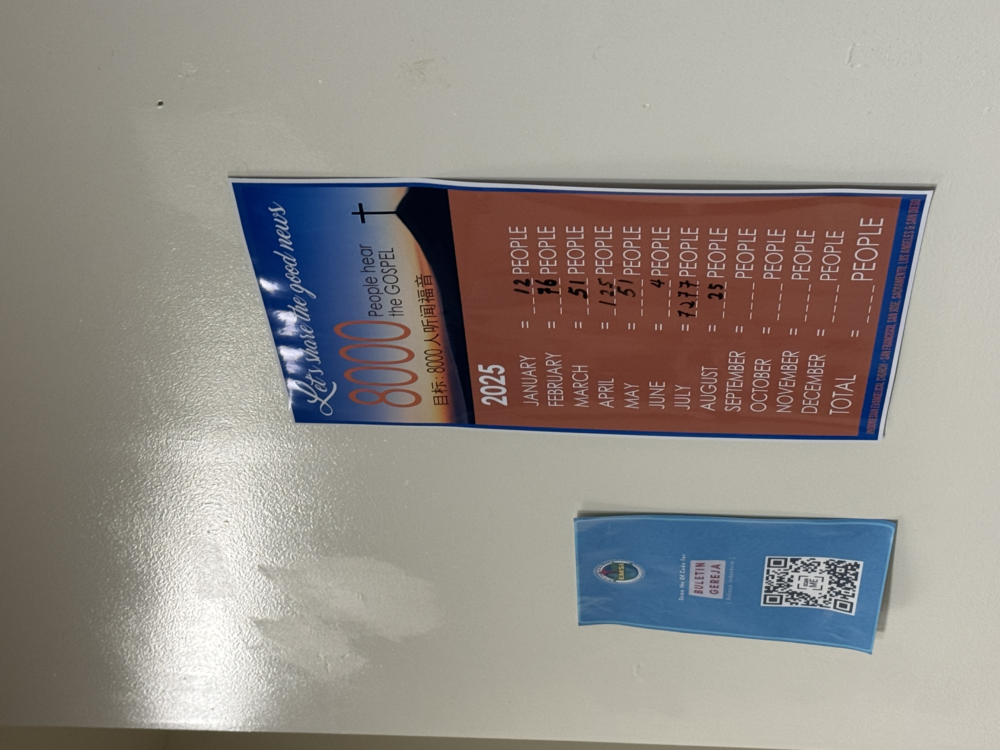
|
Time Taken: 28.220417022705078 |
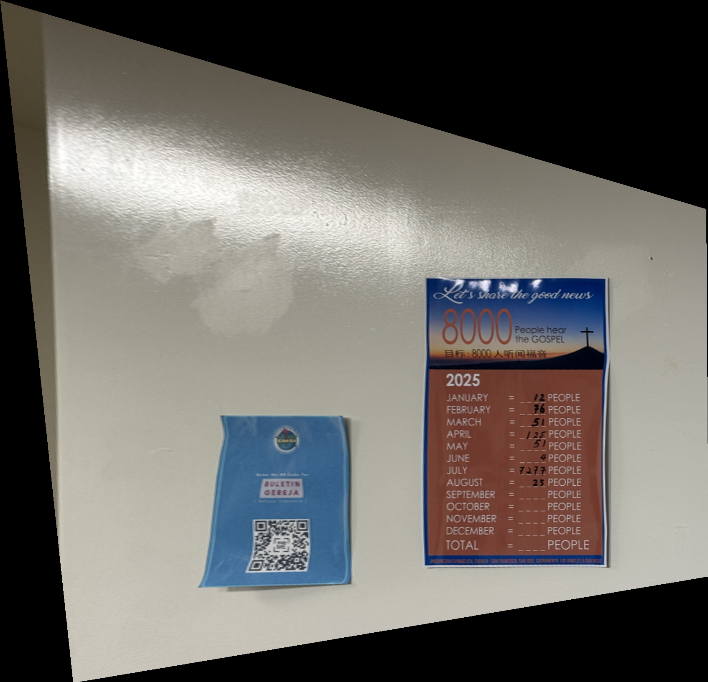 Time Taken: 54.77740812301636 |
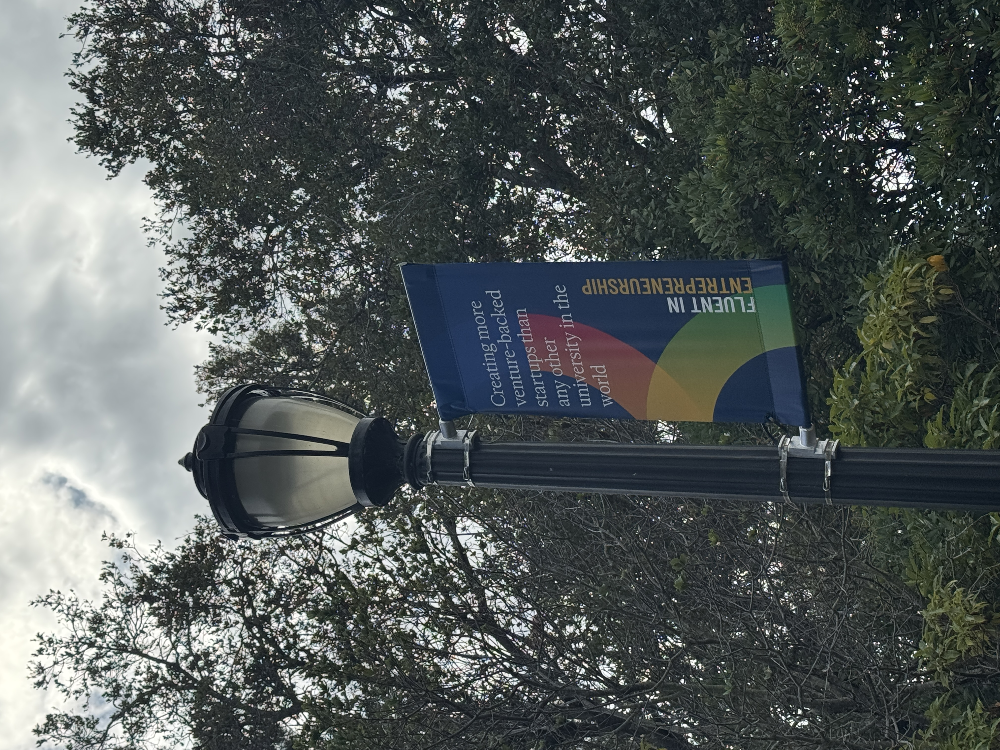
|
Time Taken: 72.14303493499756 |
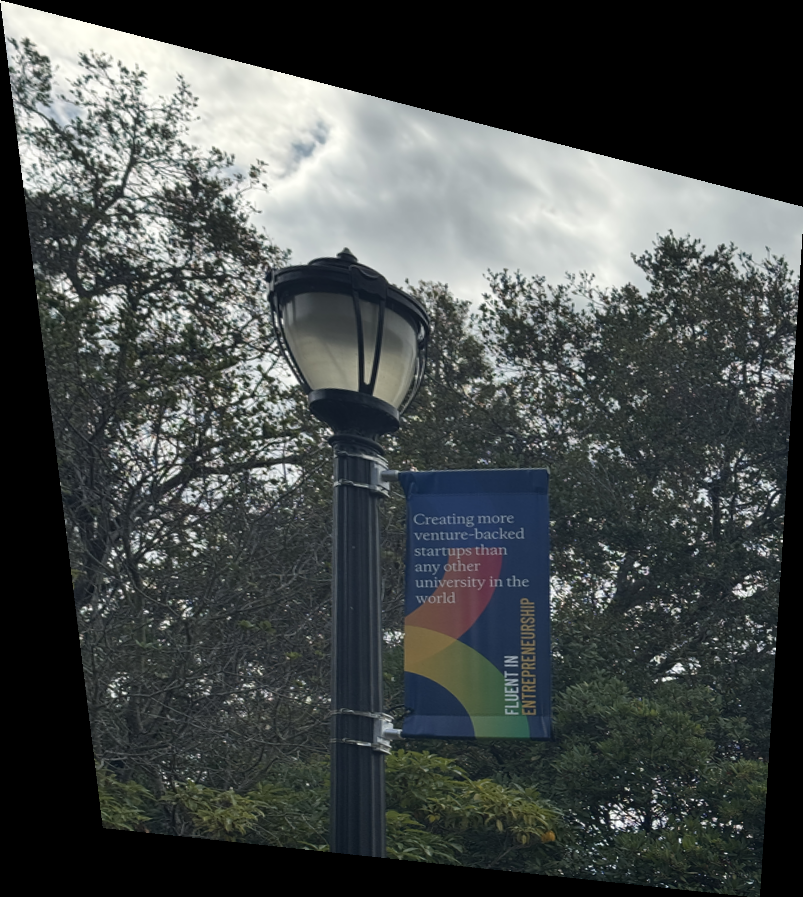 Time Taken: 142.80827379226685 |
Nearest neighbor interpolation and bilinear interpolation have similar quality results to my eyes. However, the run time of of bilinear interpolation is double of how long nearest neighbor took. If I were to zoom in closely though, I would be able to see a quality improvement with bilinear interpolation as it minimizes aliasing.
A.4: Blend the images into a Mosaic
Approach
For creating the mosaic between two images, I first select the point correspondences manually. Once these points are selected, the homography is calculated using the system Ah = b:
Matrix A:
\[ A = \begin{bmatrix} x_1 & y_1 & 1 & 0 & 0 & 0 & -x_1 u_1 & -y_1 u_1 \\ 0 & 0 & 0 & x_1 & y_1 & 1 & -x_1 v_1 & -y_1 v_1 \\ \vdots & \vdots & \vdots & \vdots & \vdots & \vdots & \vdots & \vdots \\ x_n & y_n & 1 & 0 & 0 & 0 & -x_n u_n & -y_n u_n \\ 0 & 0 & 0 & x_n & y_n & 1 & -x_n v_n & -y_n v_n \end{bmatrix} \]
Homography vector H:
\[ h = \begin{bmatrix} h_1 \\ h_2 \\ h_3 \\ h_4 \\ h_5 \\ h_6 \\ h_7 \\ h_8 \end{bmatrix}, \quad H = \begin{bmatrix} h_1 & h_2 & h_3 \\ h_4 & h_5 & h_6 \\ h_7 & h_8 & 1 \end{bmatrix} \]
Vector b:
\[ b = \begin{bmatrix} u_1 \\ v_1 \\ \vdots \\ u_n \\ v_n \end{bmatrix} \]
With this homography, image 2 is warped. This is done by taking the corners of the image and applying H to it to figure out the corners of the new image. This is used to create a blank image with the max width and height from the calculated corners. Then each pixel is looped through and nearest neighbor interpolation or bilinear interpolation is used to figure out what color the pixel should be.
Now with the original image and the warped image, the new image size is calculated by taking the top-left corner of the warped image in world coordinates and the width/height of image 1. With these values, the minimum x and y values and maximum x and y values are found. Subtracting these gives the new width and height of the canvas that can fit both images.
Image 1 is pasted onto the left side of the image and the warped image is inserted to the right side of the image, based on the previously mentioned coordinates.
For blending, a mask is created using a weighed average based on distance to the edge of the image. A laplacian stack is created for each part of the image and a gaussian stack is created for the mask. Each layer is combined with the formula laplacian_1[i] * mask_level + laplacian_2[i] * (1 - mask_level) where laplacian_1 and laplacian_2 are the laplacian stacks and mask_level the layer of gaussian stack. This is then stacked together for the final image.
Results
|
|
|
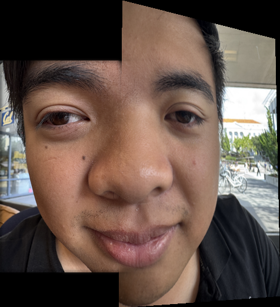
|
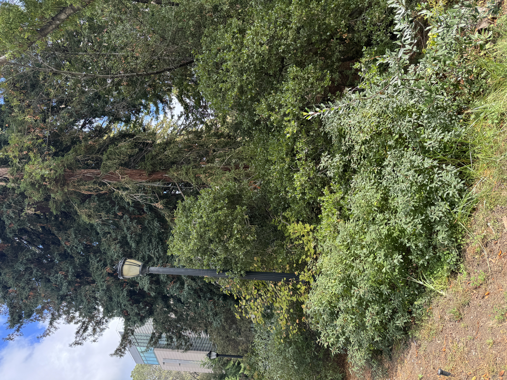 |

|
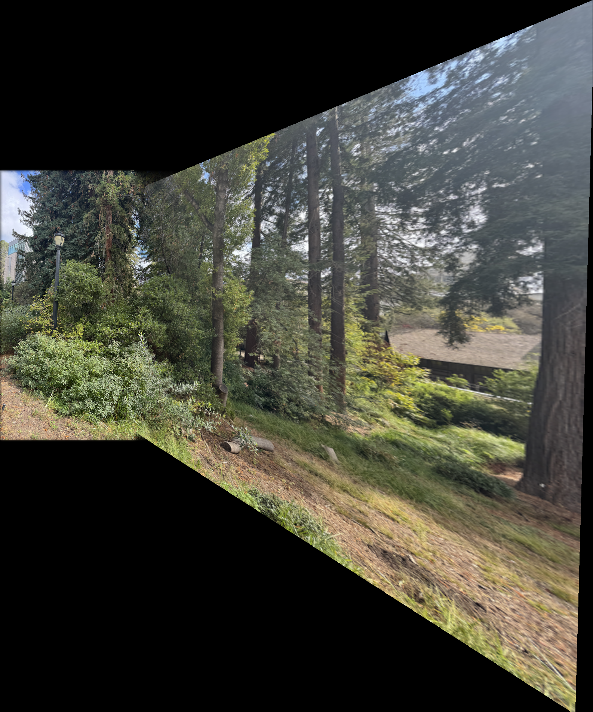
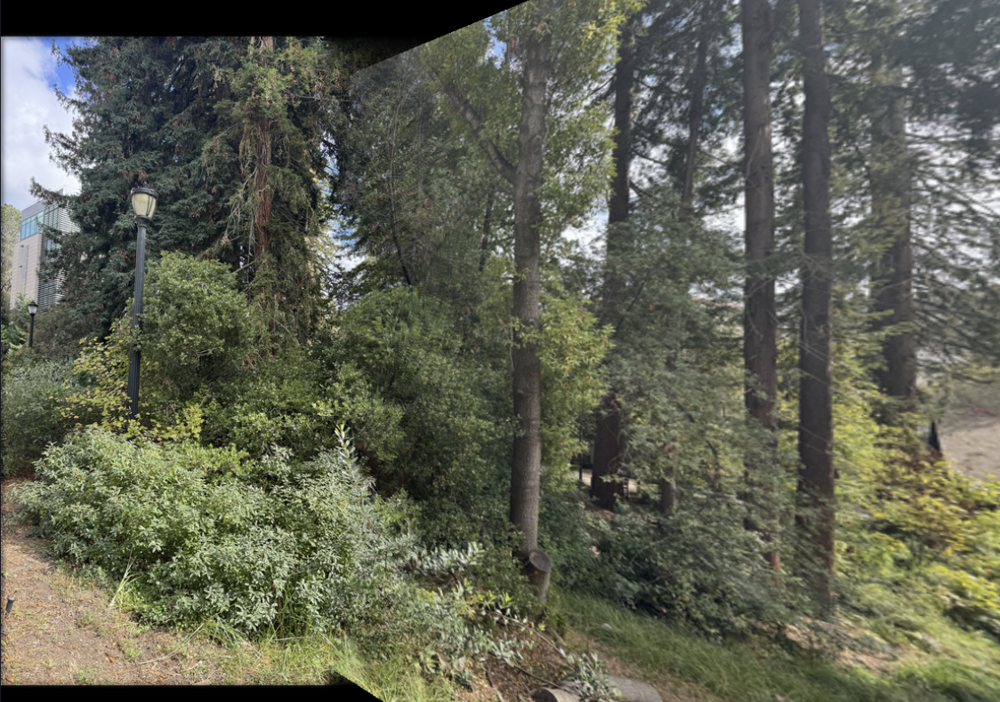
|
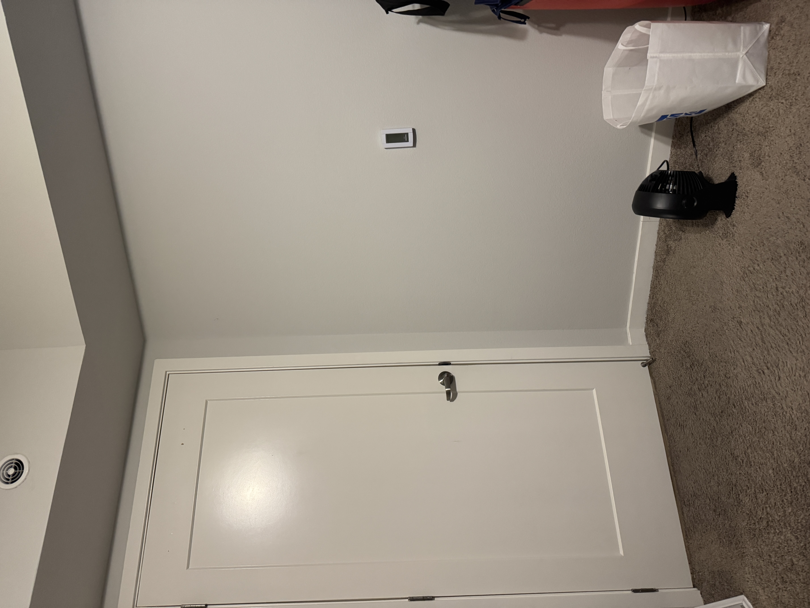 |
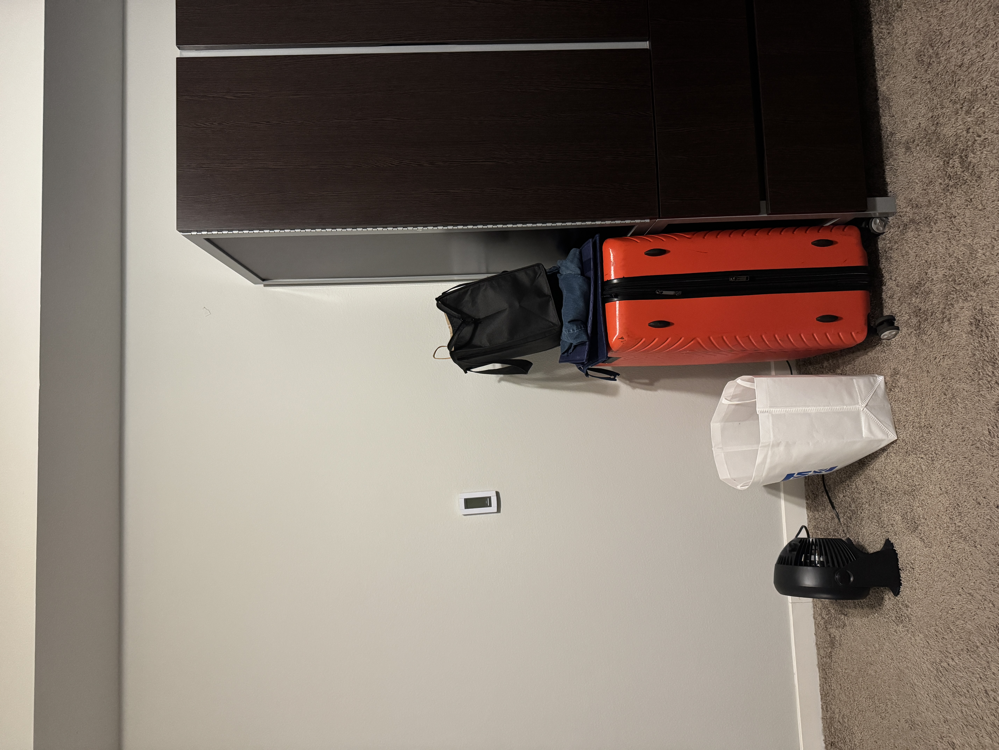 |
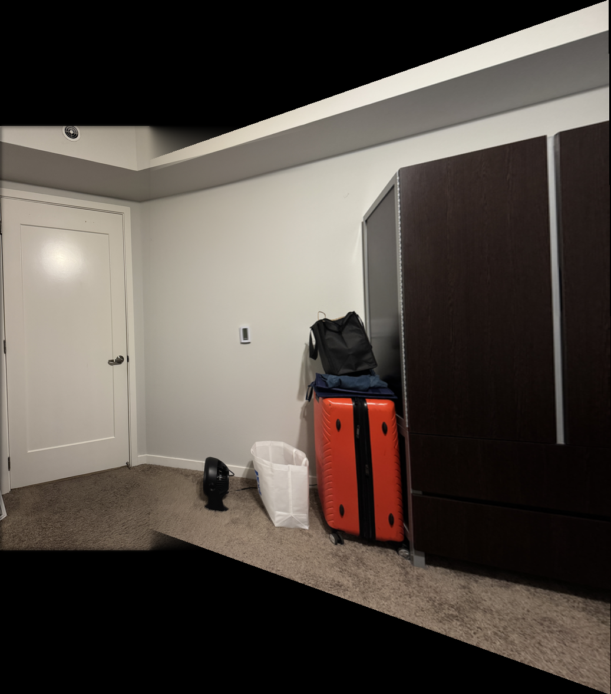